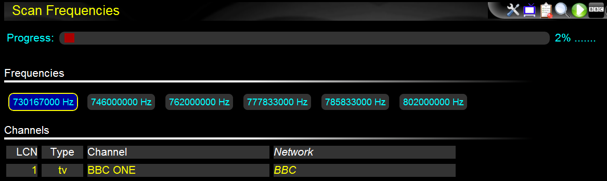
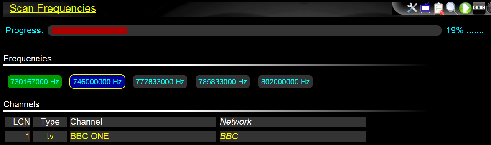
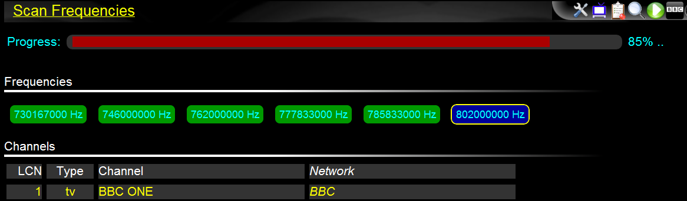
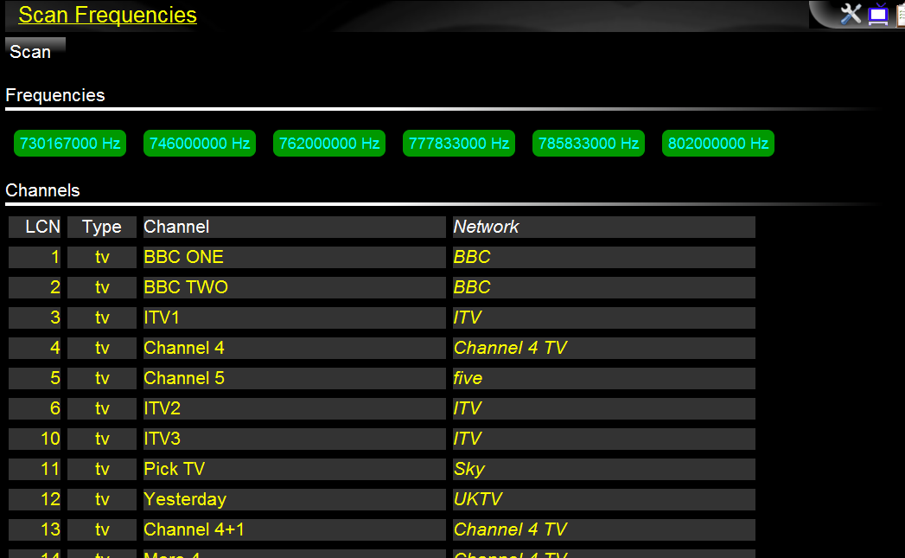

Click the "scan frequencies" icon in the toolbar to bring up the scan window.
The scan window allows you to re-scan the broadcast frequencies and updates the channel information. You only need to do this if a channel changes it's name or due to broadcast changes in your area.
Press the "scan" button to start scanning. The window will then show progress, the frequencies tuned to, and the list of discovered channels.
For example:
...
...
Once completed, the scan window will look something like:
